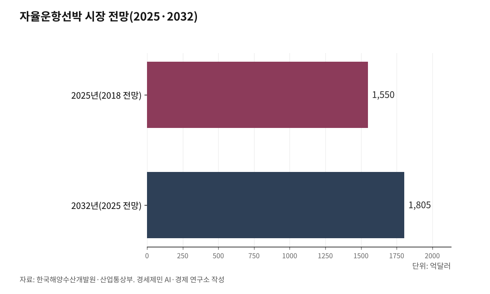
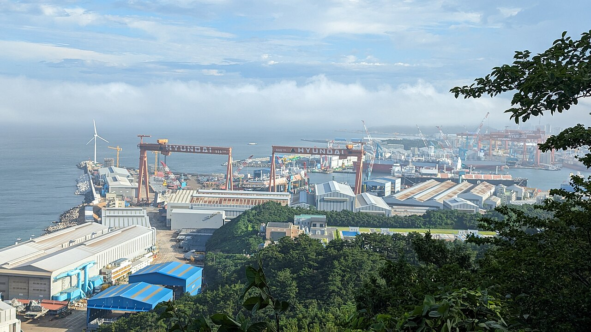

[해양 AI 융복합⑥] AI 완전자율운항선박, 7년 4600억원 기술개발 첫발
2020년 레벨3 사업의 후속, 예비타당성 조사 건너뛰고 2026년 7월 착수
정부가 든 시장 전망 기준 연도는 2025년에서 2032년, 다시 2035년으로
사람이 타지 않는 배를 만드는 일에 정부가 다시 7년을 걸었다. 여섯 해 전에도 두 부처는 비슷한 약속을 했다. 목표·사업비·시장 전망이 그동안 어떻게 바뀌어 왔는지 짚는다.
1. 예비타당성 조사를 건너뛴 사업
과학기술정보통신부는 2025년 11월 6일 제8회 국가연구개발사업평가 총괄위원회를 열었다. 이 자리에서 'AI 완전자율운항선박 기술개발 사업'의 예비타당성 조사를 면제하기로 정했다.
예비타당성 조사는 큰 국가사업에 돈을 넣기 전에 그럴 만한지 따지는 절차다. 이 사업은 그 절차를 건너뛴다. 앞서 10월 21일 국무회의가 이 사업을 국가 정책사업으로 의결했다. 사업은 산업통상부와 해양수산부가 함께 맡는다.
목표는 국제해사기구가 나눈 자율운항 네 단계 가운데 맨 위인 레벨4다. 레벨1은 사람의 판단을 돕는 단계이고, 레벨2는 사람이 타고 육지에서도 조종하는 단계다. 레벨3은 사람이 타지 않고 육지에서 원격으로 조종한다. 레벨4는 사람 없이 배가 스스로 판단해 간다.
이번 사업의 개발 내용은 사람 없는 항해와 기관 자동화, 배를 부리는 운용 기술, 검사·인증과 실증이다.

2. 레벨3 다음은 레벨4
같은 얼개의 사업이 여섯 해 전에도 있었다. 산업통상자원부와 해양수산부는 2020년 6월 17일 자율운항선박 기술개발사업 통합사업단을 발족했다. 기간은 2020년부터 2025년까지, 총사업비는 1603억2000만원이다. 이 가운데 국비가 1196억6400만원이다.
그때 목표는 대양을 갈 때 레벨3, 연안을 갈 때 레벨2였다. 성능실증센터는 울산 고늘지구에 지었고, 통합사업단은 선박해양플랜트연구소와 한국선급이 나눠 맡았다.
박준영 당시 해양수산부 기획조정실장은 그날 후속 계획을 밝혔다. "2025년 이후에는 4수준에 해당하는 완전 무인 자율운항선박 기술개발을 위한 후속사업도 기획해 나갈 예정이다."
이번 사업이 바로 그 후속사업이다. 기간은 2026년부터 2032년까지 7년이다.
국제해사기구는 2026년 5월 강제력 없는 자율운항선박 기준을 먼저 채택했다. 강제 기준은 2030년 채택, 2032년 1월 발효가 목표다(5편 참조).
기술개발이 끝나는 해와 강제 기준이 발효하는 목표 해가 같다.
3. 국회가 더한 첫해 63억원
해양수산부는 2025년 9월 1일 이듬해 정부 예산안 7조3287억원을 알렸다. 연구개발 예산은 8405억원이다. 그 보도자료에 자율운항선박 사업은 나오지 않는다.
예비타당성 조사 면제보다 두 달 앞선 때다.
해양수산부는 12월 3일 국회 심의를 거쳐 2026년 예산이 7조3566억원으로 확정됐다고 밝혔다. 국회 심의에서 529억원이 늘고 250억원이 깎였다. 늘어난 연구개발 112억원 가운데 63억원이 'AI 완전자율운항선박 기술개발' 몫이다.
사업 규모는 그로부터 열 달 뒤에 나왔다.
두 부처는 2026년 10월 12일 이 사업이 4600억원 규모로 7월 착수했다고 밝혔다. 그전까지 여러 매체는 6034억5000만원을, 정부는 '최대 6000억원'을 적었다.
해양수산부 2027년 예산안에서 이 기술개발 몫은 63억원에서 157억원으로 늘었다. 국적선박에 자율운항시스템을 보급하는 사업 29억원도 새로 잡혔다.
4. 시장 전망 기준 연도도 옮겨 갔다
한국해양수산개발원 박혜리·박한선·김보람 연구진은 2018년 10월 현안연구 요약보고서 제5호를 냈다. 자율운항선박이 만드는 해사산업과 관련 분야 시장이 2025년 약 1550억 달러, 우리 돈 약 170조원까지 커진다고 내다봤다.
2020년 사업에 착수할 때 정부도 같은 수치를 들었다. 출처는 미국 조사기관 아큐트마켓리포츠가 2017년부터 2025년까지를 잡고 낸 보고서다.
2025년 산업통상부 참고자료에는 다른 해가 나온다. 2032년 1805억 달러다. 2026년 10월 기본계획 발표문에는 2035년 약 2245억 달러가 적혀 있다.
정부가 내세운 시장 전망의 기준 연도가 2025년, 2032년, 2035년으로 옮겨 갔다.
2020년 자료에는 기대 효과도 있다. 해운업계는 연료비와 정비 시간을 아껴 배 운영비를 최대 22% 낮출 수 있다고 봤다. 선박 사고의 80%가량을 차지하는 사람의 실수도 줄인다는 기대다.
5. 인증받은 시스템은 이미 팔린다

레벨4는 아직 개발 단계지만 장비는 이미 배에 올라가고 있다.
HD현대는 자회사 아비커스가 노르웨이선급에서 자율운항 시스템 '하이나스 컨트롤'의 형식승인을 받았다고 2026년 4월 7일 밝혔다. 형식승인을 받으면 배마다 따로 검증하지 않고 곧바로 설치할 수 있다.
여러 배에 두루 쓰는 양산형 자율운항 시스템이 국제 공인을 받은 것은 이번이 처음이라고 HD현대는 밝혔다. 아비커스는 노르웨이선급과 3년 넘게 함께 일하며 안전 요건을 정하고 검증 체계를 만들었다. 임도형 아비커스 대표는 "이번 승인은 아비커스의 자율 운항 기술이 글로벌 수준의 안전성과 신뢰성을 인정받았음을 보여주는 성과"라고 말했다.
하이나스 컨트롤은 2023년부터 HD현대가 짓는 배에 들어간다. 누적 수주는 500척을 넘었다. HMM은 2030년까지 보유한 컨테이너선과 벌크선 전체에 자율운항 시스템을 넣는다고 밝혔다.
레벨4를 다룰 강제 국제기준은 2032년 발효가 목표다. 배는 그보다 먼저 바다에 나가 있다.
참고문헌
가. 공식 발표자료와 공공기록
· 「(참고자료)AI 완전자율운항선박 기술개발 사업, 예비타당성 조사 면제 확정」, 산업통상부 조선해양플랜트과, 2025.11.6., https://www.motir.go.kr/kor/article/ATCL3f49a5a8c/171162/view
· 「'AI 완전자율운항선박' 기술개발 내년 착수…예타 면제 확정」, 대한민국 정책브리핑(과학기술정보통신부), 2025.11.6., https://www.korea.kr/news/policyNewsView.do?newsId=148954322
· 「바다의 미래를 주도할 자율운항선박 개발 프로젝트 본격 착수」, 해양수산부 스마트해상물류추진단, 2020.6.17., https://www.mof.go.kr/doc/ko/selectDoc.do?docSeq=32722&menuSeq=971&bbsSeq=10
· 「해양수산부, 해양수도권 조성 등 대한민국 성장 동력 확보에 집중 투자」, 해양수산부 기획재정담당관, 2025.9.1., https://www.mof.go.kr/doc/ko/selectDoc.do?docSeq=63009&menuSeq=971&bbsSeq=10
· 「2026년도 해양수산부 예산 7조 3,566억 원 확정」, 해양수산부 기획재정담당관, 2025.12.3., https://www.mof.go.kr/doc/ko/selectDoc.do?docSeq=64021&menuSeq=971&bbsSeq=10
· 「자율운항선박 시대, "데이터로 연다"」, 산업통상부 조선해양플랜트과, 2026.5.7., https://eiec.kdi.re.kr/policy/materialView.do?num=280705
· International Maritime Organization, "IMO adopts first global Code for autonomous ships", 2026.5.22., https://www.imo.org/en/mediacentre/pressbriefings/pages/imo-adopts-mass-code.aspx
· 「K-조선 모두의 힘으로, M.AX 상생항로 나선다」, 산업통상부 제조산업정책관 조선해양플랜트과, 2026.10.12., https://eiec.kdi.re.kr/policy/materialView.do?num=287966
· 「'바다에서 여는 대한민국의 새로운 성장' 2027년 해수부 정부 예산안 8.3조 원 편성」, 해양수산부 보도자료 전재, 뉴스서울 김진환, 2026.9.1., https://newsseoul.co.kr/news/view/1065609014754755
· 「해수부, K-조선 모두의 힘으로 M.AX 상생항로 나선다」, 해양수산부 보도자료 전재, 뉴스서울, 2026.10.12., https://newsseoul.co.kr/news/view/1065590420060459
나. 연구보고서
· 박혜리·박한선·김보람, 「자율운항선박으로 스마트 디지털 해상물류체계 실현」, 『KMI 현안연구 요약보고서』 제5호, 한국해양수산개발원, 2018.10.
다. 언론 보도
· "HD현대 아비커스, 노르웨이선급서 자율운항 시스템 형식승인 획득", 뉴시스 이창훈, 2026.4.7., https://www.newsis.com/view/NISX20260407_0003580697
· "'바다의 테슬라'… HMM, 전 선단에 AI 자율운항 도입", 한국일보, 2026.7.13., https://www.hankookilbo.com/news/article/A2026070911050004516
· "'0.1도 미세 조정'으로 연비 아낀다…HMM, AI 자율운항 선단 확대", 이코노미톡뉴스 이혜수, 2026.9.23., http://www.economytalk.kr/news/articleView.html?idxno=424289
· "K-조선, 제조공정 AI 전환 확대 위해⋯2030년까지 1.4조원 투입", 아이뉴스24, 2026.10.12., https://www.inews24.com/view/2013938
마. 사진 출처
· [사진1] *Youngjin, "Government Complex Sejong 20190611 01.jpg", 위키미디어 공용, CC BY-SA 3.0, https://commons.wikimedia.org/wiki/File:Government_Complex_Sejong_20190611_01.jpg
· [사진2] XOCEAN-XO-450, "XOCEAN XO-450 Uncrewed Surface Vessel (USV) at Sea Surveying Offshore Windfarm.jpg", 위키미디어 공용, CC BY-SA 4.0, https://commons.wikimedia.org/wiki/File:XOCEAN_XO-450_Uncrewed_Surface_Vessel_(USV)_at_Sea_Surveying_Offshore_Windfarm.jpg
· [사진3] Joongwon Lee - SKKU DOA, "National Assembly (Parliament) Building in Seoul Korea.jpg", 위키미디어 공용, CC BY-SA 4.0, https://commons.wikimedia.org/wiki/File:National_Assembly_(Parliament)_Building_in_Seoul_Korea.jpg
· [사진4] ITookSomePhotos, "Container ship "HMM Le Havre" in the Solent, England.jpg", 위키미디어 공용, CC BY 4.0, https://commons.wikimedia.org/wiki/File:Container_ship_%22HMM_Le_Havre%22_in_the_Solent,_England.jpg
· [사진5] Wvdp, "Hyundai Heavy Industries Ulsan Shipyard from Jujeon Beacon Mound - 2023-07-24.jpg", 위키미디어 공용, CC0, https://commons.wikimedia.org/wiki/File:Hyundai_Heavy_Industries_Ulsan_Shipyard_from_Jujeon_Beacon_Mound_-_2023-07-24.jpg
※ 이 기사는 인공지능을 활용해 작성했습니다.
관련기사
- [해양 AI 융복합⑤] 자율운항선박, 배보다 먼저 온 국제 규범
- [해양 AI 융복합⑦] 이미 바다에 뜬 배에 올라탄 AI, 항로·엔진·선내 안전까지
- [해양 AI 융복합④] 항만 첫 데이터센터 품는 인천 신항, 착공은 또 2027년 하반기 뒤로
- [해양 AI 융복합③] 부산항만공사, 국내 첫 'AI 항만' 전환 계획 내놨다
저작권자 © AI경세제민 무단전재 및 재배포, AI학습 및 활용 금지